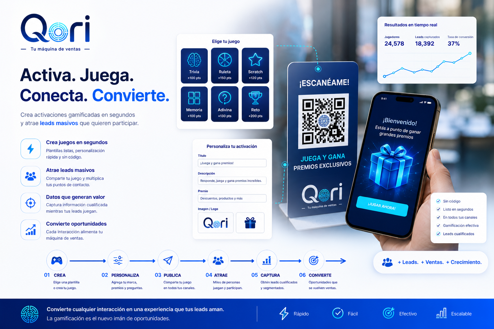
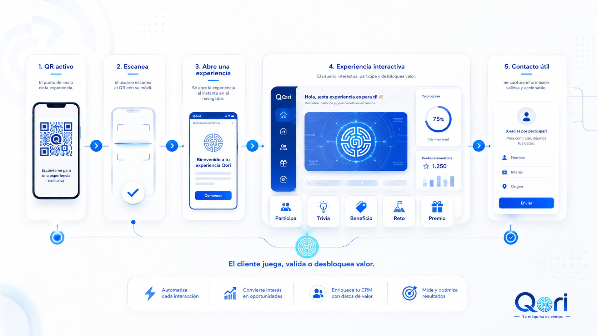

Cada interacción entra con origen, contexto y potencial de avance.
Filosofía empresarial con raíz latinoamericana
Qori es Tu Fábrica de Ingresos
Valor que se ofrece. Palabra que se cumple. Confianza que permanece.
Qori ayuda a empresas latinoamericanas a crecer desde relaciones mejor cuidadas, ventas medibles y confianza que vuelve.
La tecnología es el vehículo. La filosofía es el motor: crear valor real, cuidar la promesa y construir una empresa a la que las personas quieran volver.
Crecimiento con sistema
Cuando las relaciones tienen estructura, el crecimiento se vuelve claro.
Qori ayuda a convertir intención, conversación y confianza en una operación visible: cada oportunidad tiene contexto, siguiente paso, evidencia y aprendizaje.
WhatsApp, formularios, campañas y eventos se leen como parte de una misma relación.
La empresa opera con responsables, estados y próximas acciones claras.
La decisión comercial queda vinculada con postventa, recompra y referido.
Cada campaña revela qué relación creó valor y qué aprendizaje deja.
La postventa abre razones concretas para permanecer, recomendar y expandir valor.
La empresa entiende qué mejora en la vida del cliente.
La promesa se dice con precisión y responsabilidad.
Cada interacción fortalece continuidad y confianza.
El cliente vuelve, recomienda y abre nuevas posibilidades.
FILOSOFÍA QORI
Filosofía GOS
Customer First, O3 y 3R no son un framework: son una forma de conciencia empresarial. Customer First responde al porqué; O3, al cómo se crea, entrega y mejora el valor; y 3R, a la evidencia de que el valor se convirtió en relación y crecimiento.
¿Para quién existe el valor?
Responde al porqué. Esta conciencia une marketing, ventas, servicio, producto y estrategia alrededor de un mismo principio: crear valor relacional sostenible.
Diseña encuentros útiles: la oferta no grita ni persigue atención; revela una posibilidad útil.
La operación es la ética de la promesa: lo que la empresa hace después de que alguien confía.
Se convierte la experiencia en sabiduría empresarial.
La relación permanece.
La relación se comparte.
La relación se expande hacia nuevas formas de valor.
Tu Fábrica de Ingresos
Qori convierte la filosofía en hábitos diarios.
La fábrica funciona cuando cada relación tiene claridad, una siguiente acción y una forma de aprender.
Un chat, QR, formulario, feria o recomendación queda visible.
La empresa ve origen, interés, etapa y próxima acción.
El equipo sabe qué hacer, cuándo hacerlo y por qué importa.
El resultado se conecta con la acción que lo hizo posible.
La experiencia después de comprar sostiene la confianza.
La relación puede volver, recomendar y abrir nuevo valor.
Raíz muisca, empresa escalable
Aprender a hacer gran empresa desde el valor que circula.
Qori toma una inspiración muisca con respeto: el valor vive en lo que se entrega, se cuida y vuelve convertido en confianza.
Qori significa oro
Aquí el oro representa valor reconocido.
La filosofía muisca detrás de Qori enseña una forma distinta de construir empresa: conocer el territorio, ofrecer algo valioso, cuidar la palabra y permitir que la confianza vuelva como relación, recomendación y crecimiento.
Una empresa grande vende mejor cuando aprende a ser más confiable a escala.
Valor
lo que se cuida vuelve
Territorio
Ofrenda
Palabra
Memoria
Conocer a quién sirves, qué necesita, cómo decide y qué contexto rodea la relación.
Diseñar ofertas y experiencias que mejoran algo concreto en la vida del cliente.
Convertir cada promesa en operación visible, responsable y medible.
Aprender de cada señal para que la relación permanezca, recomiende y abra nuevo valor.
La empresa crece cuando el cliente también recibe más claridad, utilidad y posibilidad.
El crecimiento debe cuidar cliente, equipo, margen y experiencia.
Prometer es comprometer la operación. La marca se prueba cuando cumple.
Una relación bien cuidada puede volver, recomendar y fortalecer el territorio que la rodea.
Cada empresa impacta un contexto: clientes, aliados, equipos, barrios, ciudades y mercados.
Medir es recordar con inteligencia: saber qué creó valor para mejorar el siguiente ciclo.
Para quién es
Lo pequeño también merece sistema. Lo grande también necesita humanidad.
Qori ayuda a empresas de distintos tamaños a transformar energía, cercanía y talento en crecimiento relacional operable.
Profesionales independientes
Punto de partida: cercanía, experiencia y relaciones directas.
Con Qori: oportunidades visibles, seguimiento y criterio comercial.
Emprendedores
Punto de partida: energía, validación y conversaciones de mercado.
Con Qori: una primera fábrica que ordena demanda y acción.
Pequeñas empresas
Punto de partida: clientes, reputación local y capacidad de servicio.
Con Qori: retención, recompra y referidos con método.
Empresas medianas
Punto de partida: equipos, canales y operación comercial activa.
Con Qori: áreas alineadas alrededor de relación y revenue.
Empresas en expansión
Punto de partida: nuevas sedes, mercados y unidades de crecimiento.
Con Qori: estaciones, evidencia y gobierno comercial escalable.
Producto visual
Una superficie SaaS para cuidar relaciones y decidir mejor.
Ventas, seguimiento, continuidad, recomendaciones y aprendizaje conviven en una lectura clara y accionable.
Ventas con origen$42.8M
Clientes que vuelven78%
Recomendaciones64
Activaciones12
Camino de relación
Señales de confianza
Alta confianza
Siguiente valor
Referido abierto
Listo para propuesta con evidencia.
Cliente listo para una experiencia de continuidad.
La confianza puede convertirse en expansión.
Activación gamificada
De perseguir contactos a crear momentos que la gente quiere abrir.
Qori convierte la filosofía humana en experiencias con QR, dinámicas, beneficios y validaciones. El cliente participa, la empresa recibe contexto y el equipo sabe cómo atender mejor.


Aplicación clara
Atraeparticipación voluntaria.
Ordenaorigen, interés y prioridad.
Activasiguiente acción del equipo.
Atrae, ordena y activa la siguiente acción.
El visitante participa porque recibe valor. Qori guarda la señal, reconoce el origen y deja el contacto listo para atención.
QR en tienda, evento, empaque, anuncio o campaña.
Trivia, beneficio, reto, validación o recompensa.
Interés, origen, campaña y contexto comercial.
Prioridad, responsable y siguiente paso visible.
Mejor atención, seguimiento y venta atribuida.
Así se vuelve software
Ofrece valor, opera el volumen y mejora con evidencia.
La gamificación atrae. Las estaciones procesan. La evidencia muestra qué acción abrió mejores conversaciones, mejor atención y más ventas.
La marca entrega una experiencia útil antes de pedir datos.
Cada contacto queda ordenado por estado, origen y siguiente acción.
El equipo ve qué activación generó atención, citas, ventas y continuidad.
Con esto vendo más porque la atención deja de perderse.
más participación
más contexto
mejor seguimiento
ventas atribuibles
Manifiesto Qori
Una empresa se vuelve fuerte cuando aprende a merecer la siguiente relación.
Qori existe para que las empresas latinoamericanas crezcan con sistema, confianza y humanidad.
Activa tu fábrica
Empieza a operar tu crecimiento desde relaciones que merecen permanecer.
Cuéntanos cómo crece hoy tu empresa y qué tipo de sistema necesita para convertir oportunidades, confianza y aprendizaje en ventas sostenibles.